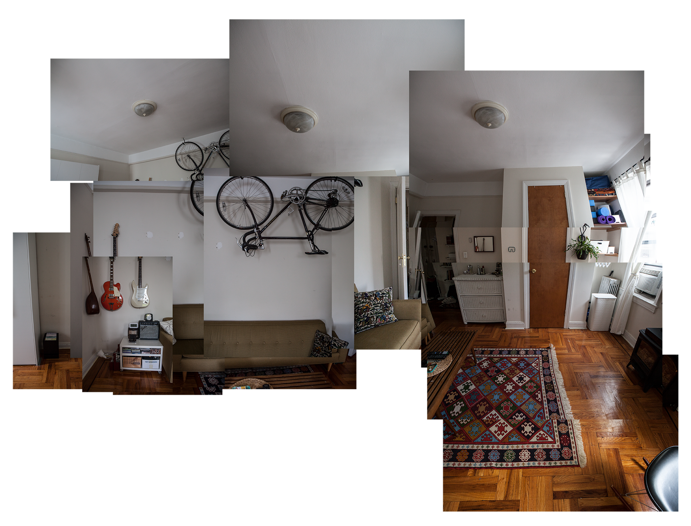
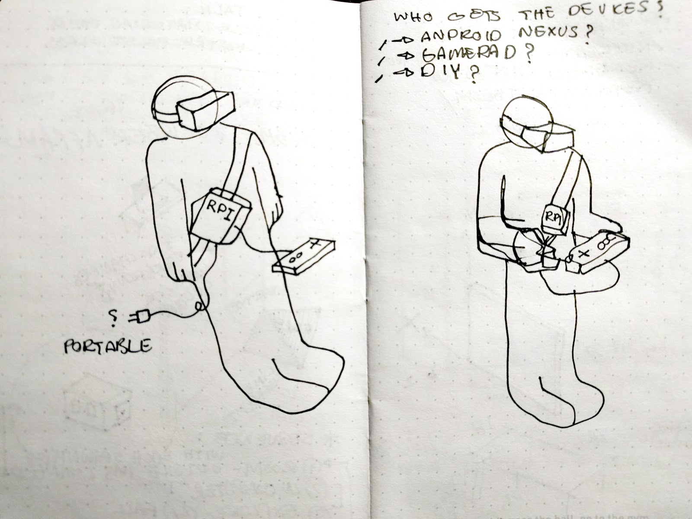

Mani @ Google:
Developer Advocate Presentation
Mani Nilchiani - 03.29.2018
üëã Nice to meet you
I'm a Software Engineer at Architizer
I make Software Art
And play music
Talk Structure
- Software for artistic expression
- Making tools for art
- Browser as platform
- Diffy.js
- My first OSS Project
- Quick Demo
- Dark Patterns VR
1. Writing software for art
Procedural thinking, Interaction Design
Vera Molnar


Manfred Mohr


Camille Utterback
Golan Levin & collaborators
2. Making tools for art
Much like making your own brush üñåÔ∏è
P.S You will love the tool you built. No matter how flawed it is.Processing, OpenFrameworks, P5.js
High level utils + addon echosystems


3. Browser as platform
The sky is the limit!
OK, Call Stack is the limit.The Night
Fullscreen that browser, hook up a webcam, projec it.4. diffy.js
Quick and dirty motion detection:
- Where did motion happen?
- How much?
API
import { create } from 'diffyjs';
const diffy = create({
resolution: { x: 15, y: 10 },
sensitivity: 0.2,
threshold: 25,
debug: true,
containerClassName: 'my-diffy-container',
sourceDimensions: { w: 130, h: 100 },
onFrame: (matrix) => { /* good things */ }
});
Worker
compare(frame1, frame2) {
const data1 = frame1.data;
const data2 = frame2.data;
const length = data1.length;
const buffer = new ArrayBuffer(length);
this.worker.postMessage({
buffer,
data1,
data2,
sensitivity: this.sensitivity,
threshold: this.threshold,
width: this.sourceWidth,
height: this.sourceHeight
});
}

ArrayBuffer and TypedArray
ü§î I wonder what unsigned integers clamped at 255 can represent
drawBlendImageFromBuffer(buffer) {
this.blendImageData
.data
.set(
new Uint8ClampedArray(buffer)
);
this.blendCanvasCtx.putImageData(this.blendImageData, 0, 0);
this.previousImageData = this.currentImageData;
}
Bitwise
üòÑ [Bit]wise guy, eh?
// bitwise Math.round
export const round = (number) => (number + .5) >> 0;
// butwise Math.abs
export const abs = (value) => (value ^ (value >> 31)) - (value >> 31);
Up Next!
üôÑ React. What else did you expect?
import Diffy from 'diffy-react'
<Diffy
resolution = {{ x: 15, y: 10 }}
sensitivity = { 0.2 },
threshold = { 25 },
debug = {true },
containerClassName = "my-diffy-container"
sourceDimensions = {{ w: 130, h: 100 }}
onFrame = { (matrix) => { /* good things */}} />
GPU FTW ... Also For The Math
üêµ MaiaVictor / WebMonkeys
// Creates a WebMonkeys object
const monkeys = require("WebMonkeys")(); // on the browser, call WebMonkeys() instead
// Sends an array of numbers to the GPU
monkeys.set("nums", [1, 2, 3, 4, 5, 6, 7, 8, 9, 10, 11, 12, 13, 14, 15, 16]);
// Employs 16 monkeys to work in parallel on the task of squaring each number
monkeys.work(16, "nums(i) := nums(i) * nums(i);");
// Receives the result back
console.log(monkeys.get("nums"));
// output: [ 1, 4, 9, 16, 25, 36, 49, 64, 81, 100, 121, 144, 169, 196, 225, 256 ]
5. üë∂ My first OSS
Where intense insecurity and glory collide.
Code is only half the work.
Documentation is what makes or breaks good software.
So I got to work.
6. üé• Demo Time
On doing & Un-doing (Installation)

You-Eye
7. Dark Patterns VR
An interactive WebVR narrative about the future
of surveillance and privacy
A collaboration with Caroline Sinders
The Premise
We hypothesized the future of
the regulated Web and interconnected life
Inspirations
Inspirations
Art
Design
Installation
Gameplay

Gameplay

Technique
Everything is a component
Gamepad: Client

Gamepad: Server
Gamepad: A-Frame Component
Thank you!
Mani Nilchiani, March 2017
mani.io